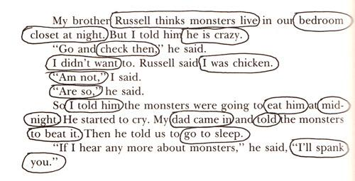

Study smart for excellent result.
স্পিড রিডিং। তিন মিনিটের কম সময়ে এক পাতা বা এক মিনিটে ৮০০ ওয়ার্ড পড়ে ফেলার উপায়।
আমরা সাধারনত ইমেইল, লম্বা স্টেটাস, টাইমলাইন আপডেট, পত্রিকার নিউজ, এসএমএস, গল্পের বই, ডিসকাউন্ট অফারের লিফলেট, মুভির সাবটাইটেল (ইংরেজিতে কি বলে বুঝি না, তাই সাবটাইটেল পড়ে পড়ে দেখতে হয়), টিভির নিচের অংশে নিউজ ফিড, হাবিজাবি কত কি পড়ি। আগের আমলে তিন গোয়েন্দা, মাসুদ রানা, প্রেমপত্র, চিকন-পাতলা গুপ্তের বই। আর সবচেয়ে অপছন্দের হচ্ছে এসাইনমেন্ট, ক্লাসটেস্ট বা পরীক্ষার জন্য বইপড়া। সবমিলিয়ে প্রতিদিন আপনি গড়ে ২-৪ ঘন্টা পড়ার মত ফালতু কাজে ব্যয় করেন।
স্পিড রিডিং প্রাকটিস করার জন্য, সহজ পাঠযোগ্য কোনো একটা জিনিস নেন। কোনো নিউজপেপার বা ম্যগাজিন বা সহজ একটা গল্পের বই হইলে ভালো হয়। একটা স্টপ ওয়াচ লাগবে।
১. ঘড়ি ধরে এক মিনিট পড়ুন। চেষ্টা করেন দ্রুত পড়তে। দেখেন কয় লাইন পড়তে পারছেন। সেটা একটা কাগজে লিখে নেন। ধরেন, আপনি ১০ লাইন পড়তে পারছেন।
২. আপনি যদি মুখে উচ্চারণ করে পড়েন। সেটা বাদ দিতে হবে। কারণ, উচ্চারণ করে পড়তে গেলে টাইম বেশি অপচয় হয়। পড়ার গতি ঠিক থাকে না। জোর করে উচ্চারণ করে পড়া বন্ধ করতে হলে, মুখের উপর একটা আঙ্গুল দিয়ে, চাপ দিয়ে, ধরে রাখেন। ঠোট নাড়াতে পারবেন না। উচ্চারণ করতে পারবেন না।
৩. দ্বিতীয় সমস্যা হচ্ছে আপনি মুখে উচ্চারণ না করলেও দেখা যায় আপনি আপনার ব্রেইনের মধ্যে উচ্চারণ করতেছেন বা প্রত্যেকটা ওয়ার্ড, একটার পর একটা আলাদা করে দেখতেছেন। সেইভাবেই মাক্সিমাম লোকজন পড়ে। সেটা আমরা বুঝতে পারি না। নিজের অজান্তেই করি। সেটার জন্য কিচ্ছু করার ধরকার নাই। জাস্ট স্বীকার করেন যে করেন। ডাহা মিথ্যা কথা বল্লে, চটকনা খাবেন।
৪. একটা কলম বা পেন্সিল নেন। সেটা দিয়ে ঘড়ি ধরে আবারো এক মিনিট পড়বেন। পড়ার সময়, প্রত্যেকটা লাইনের নিচ দিয়ে কলম বাম থেকে ডানে সরাবেন। তবে নিউজ বা আর্টিকেলটাতে কি বলতে চাইসে সেটার বিষয়বস্তু বুঝার একদম চেষ্টা করবেন না। জাস্ট পড়বেন। পড়ার সময় কলম দিয়ে দাগ দিবেন না। বা হাইলাইটার দিয়ে রঙিন করবেন না। তবে, যে ওয়ার্ডটা পড়ে ফেলছেন সেটাতে ফেরৎ যেতে পারবেন না। অপসন শুধু সামনে এগিয়ে যাবার। পয়েন্টারের কাজ হচ্ছে আপনার পড়ার ডিরেকশন সামনের দিকে রাখা। এক মিনিট শেষ হইলে পড়া বন্ধ করে দেখেন, কয় লাইন পড়া হইছে। ধরেন আপনি পড়ছেন ১৫ লাইন। এই কাজটা দুই তিন বার করতে পারেন।
৪. একটা কলম বা পেন্সিল নেন। সেটা দিয়ে ঘড়ি ধরে আবারো এক মিনিট পড়বেন। পড়ার সময়, প্রত্যেকটা লাইনের নিচ দিয়ে কলম বাম থেকে ডানে সরাবেন। তবে নিউজ বা আর্টিকেলটাতে কি বলতে চাইসে সেটার বিষয়বস্তু বুঝার একদম চেষ্টা করবেন না। জাস্ট পড়বেন। পড়ার সময় কলম দিয়ে দাগ দিবেন না। বা হাইলাইটার দিয়ে রঙিন করবেন না। তবে, যে ওয়ার্ডটা পড়ে ফেলছেন সেটাতে ফেরৎ যেতে পারবেন না। অপসন শুধু সামনে এগিয়ে যাবার। পয়েন্টারের কাজ হচ্ছে আপনার পড়ার ডিরেকশন সামনের দিকে রাখা। এক মিনিট শেষ হইলে পড়া বন্ধ করে দেখেন, কয় লাইন পড়া হইছে। ধরেন আপনি পড়ছেন ১৫ লাইন। এই কাজটা দুই তিন বার করতে পারেন।
৬. কলম বা পেন্সিল দিয়ে লাইনের নীচ দিয়ে সামনের দিকে নেয়ার কারণ হচ্ছে, আপনার চোখ কে ট্রেইন করা। প্রশিক্ষণ দেয়া। চোখ ঘুরানোর ডিরেকশন ঠিক রাখা। আমাদের সমস্যা হচ্ছে, এক ওয়ার্ড পড়ার পরেও চোখ তখনও ওয়ার্ডের মায়া ছাড়তে পারে না। কয়েকদিন কলম দিয়ে প্রাকটিস করার পর আপনার আর কলম লাগবে না। চোখ ট্রেইনড হয়ে গেলে, কলম ছাড়াই স্পিডে পড়তে পারবেন।
৭. আপনার নতুন টার্গেট হচ্ছে, এক মিনিটে তিনগুন পড়া। সেটা এখন না করলেও চলবে। পরবর্তীতে আপনি যখন কোনো মেইল বা লম্বা স্টাটাস পড়তে যাবেন। এই পদ্ধতিটা প্রাকটিস করতে থাকবেন। ব্যস, আপনার স্পিড এম্নিতেই তিনগুন হয়ে যাবে। এইটা প্রাকটিসের জিনিস। প্রাকটিস করতে করতে আপনার বিষয়বস্তু বুঝার পরিমান বাড়তে থাকবে। স্পিড রিডিং একটা ফান। এই ফান করতে করতে অনেক সময় বেচে যাবে। সেই সময় দিয়ে, প্রেমিকার সাথে চ্যাট করতে পারবেন।
৮. স্পিডে পড়তে গেলে প্রথমেই a, and, the, an, then, our, in টাইপের কমন ওয়ার্ড গুলা স্কিপ করা শুরু করবেন। আরেকটু পাকনা হইলে, তিন চারটা ওয়ার্ড এক সাথে স্কিপ করা শুরু করে দিবেন। আসলে চোখ এক সাথে দেড় কি দুই ইঞ্চি জায়গায় ফোকাস করতে পারে। একটা সেন্টেন্সের মধ্যে কিছু গুরুত্বপূর্ণ ওয়ার্ড থাকে বাকি সব ফাও। ফাওগুলাতে সময় নষ্ট করা বন্ধ করাই স্পিড রিডিং এর মূল উদ্দেশ্য।
৯. কোনো একটা চ্যাপ্টার পড়ার দর্কার হইলে। একটা হাই লেভেলের ওভারভিউ নেন। শুরুতেই পুরা চ্যাপ্টারটা জাস্ট পাচ মিনিটে পাতা উল্টিয়ে দেখে নেন। হেডারগুলা দেখেন। ডায়াগ্রাম থাকলে সেটাতে এক নজর দেন। চ্যাপ্টার এর শেষে প্রশ্ন থাকলে সেগুলা এক নজর দেখেন। খেয়াল করবেন, আমি কিন্তু বলছি, দেখেন। পড়তে বলি নাই।
১০. এইবার পড়তে বসলে। কোনো প্যারাগ্রাফের এক লাইন বা দুই লাইন পড়লে কিন্তু আপনি একটা আইডিয়া পাবেন এইখানে কবি কি বলতে চাইছেন। তখন কয়েক লাইন জাম্প দিলে বেশি কিছু হারানোর থাকবে না। । আবার প্যারাগ্রাফের শেষ কয়েক লাইন পড়েন। সেই স্টাইলে আপনি কয়েকটা প্যারাগ্রাফ বা সেকশনের হেডিং পড়েই স্কিপ করতে পারেন। তবে কোথাও ডায়াগ্রাম বা কঠিন চিত্র থাকলে সেটা খুটিয়ে খুটিয়ে পড়বেন। বা কোনো গুরুত্বপূর্ণ প্রশ্নের উত্তর খুঁজে বের করতে হইলে তখন চিপাচাপা ভালো করে দেখেন।
বিদঘুটে ম্যাথ বা বিখাউজ রিসার্চ জার্নাল পড়ার ক্ষেত্রে এই সিস্টেম খুব বেশী কাজে দিবেনা। আমি গদ্য বা বাংলা টাইপ কোনো সাবজেক্ট পড়তে এই সিস্টেম ফলো করতাম। আজকে অনলাইনে সার্চ দিয়ে দেখি, প্রশ্নপত্রের মত আমার বুদ্ধিও ফাস হয়ে প্রচুর ব্লগ এবং টিউটরিয়াল তৈরী হয়ে গেছে আগেই।
